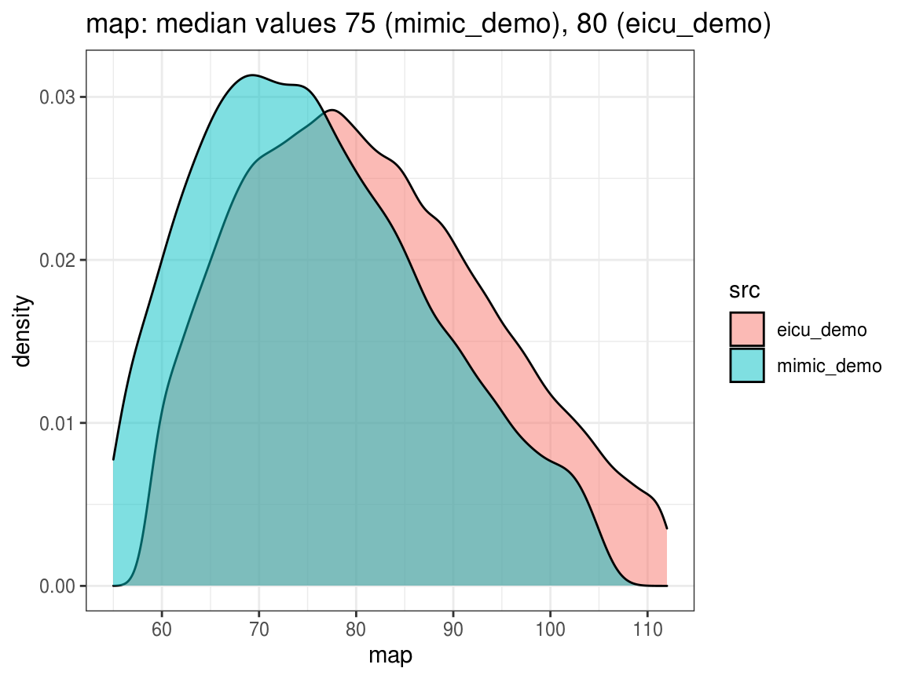
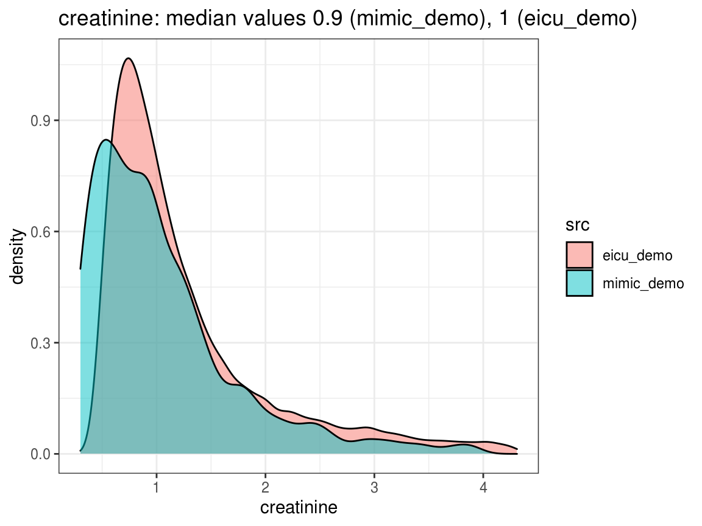
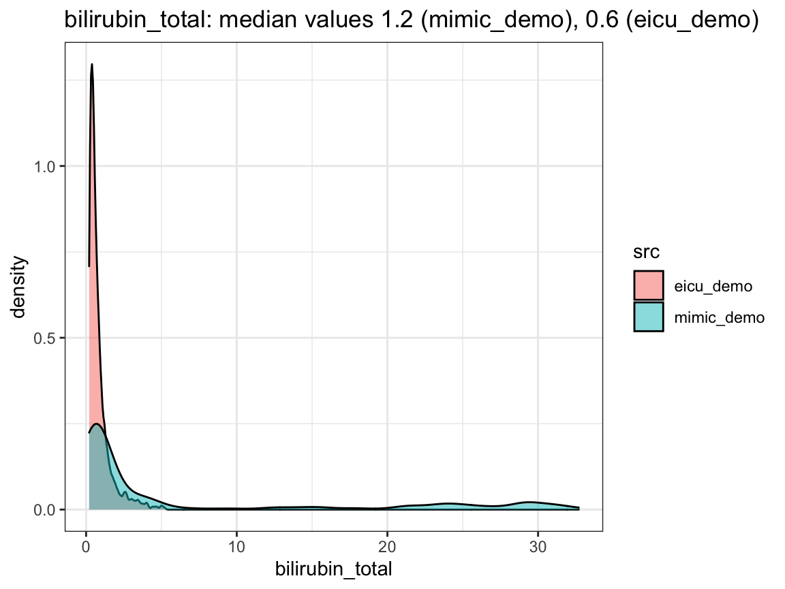
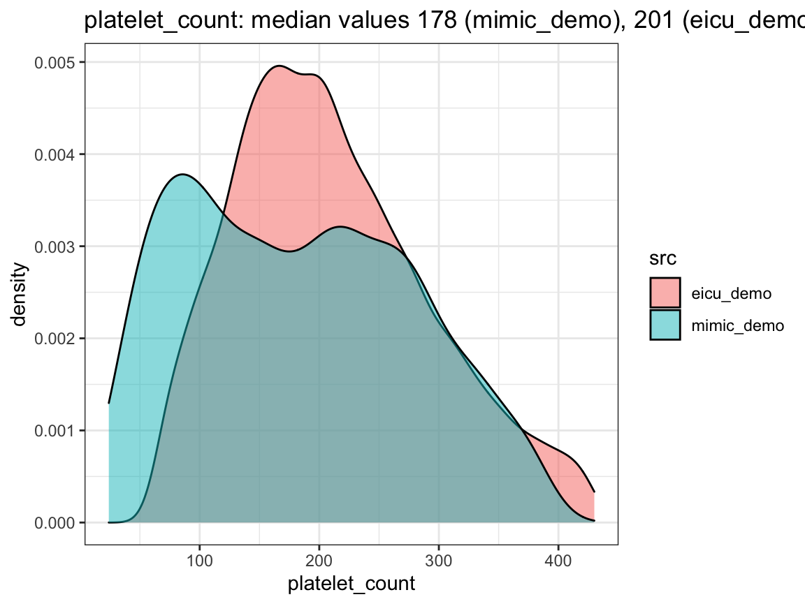
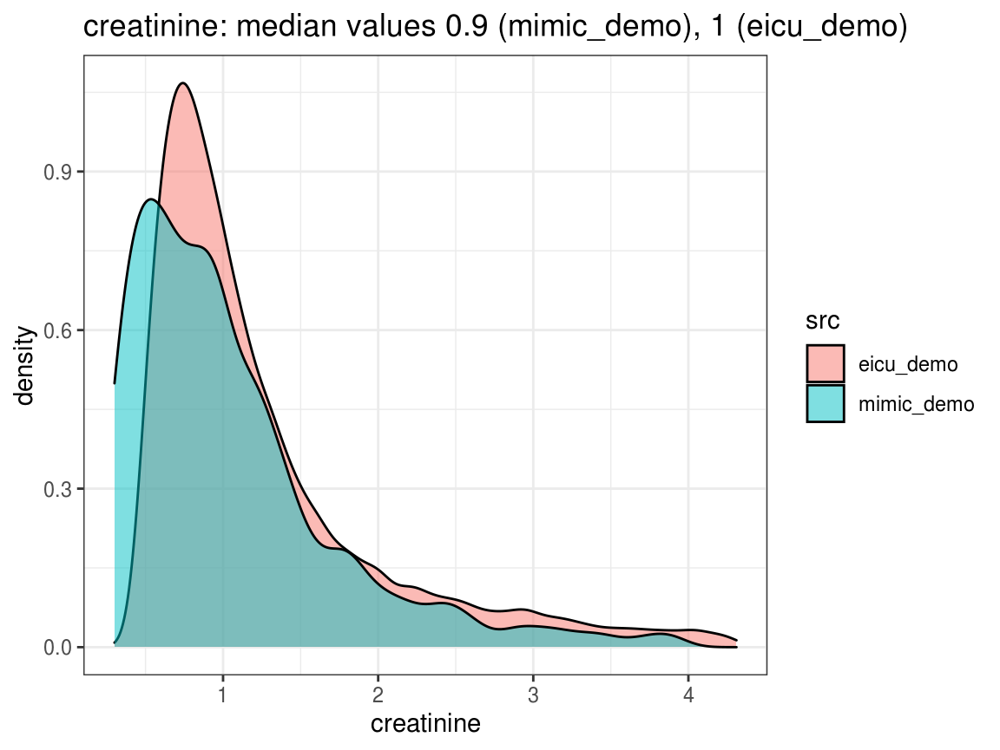
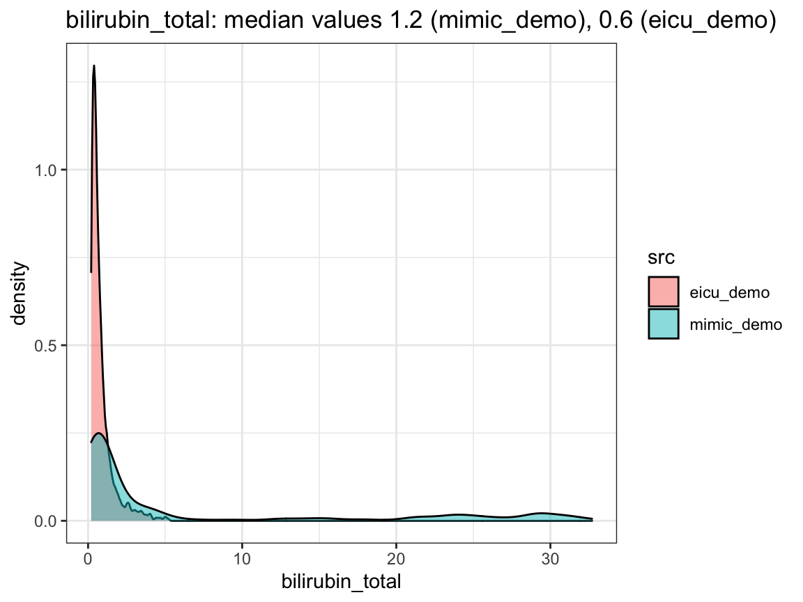
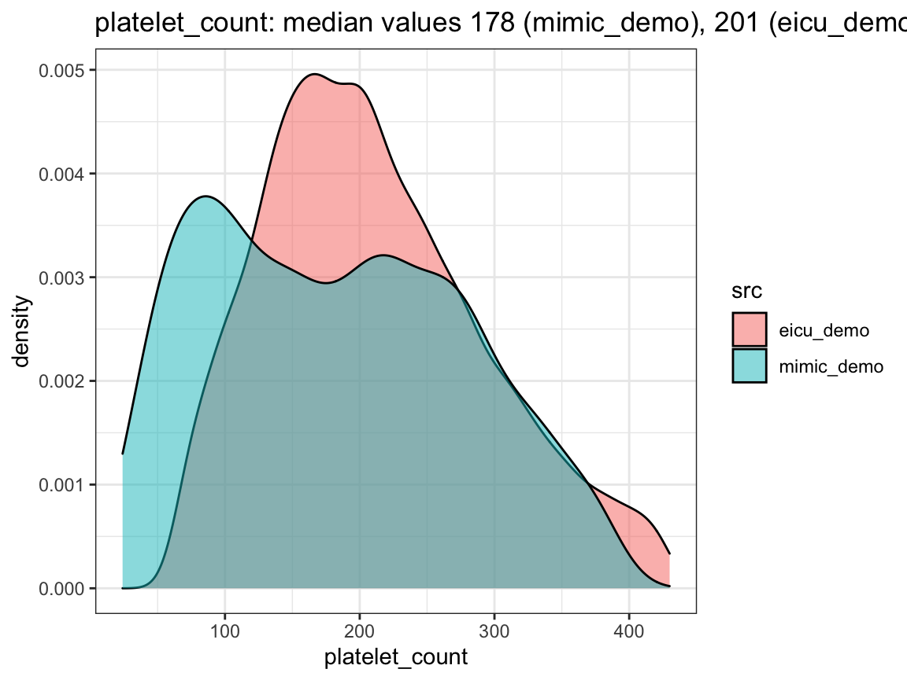

Units of measurement
uom.RmdPossible mismatch in units
Working with different ICU datasets can be challenging in terms of units of measurement. In particular, combining data from different countries can cause a mismatch in the units, as the practices vary substantially. In particular, we note that the commonly used unit of measurement for laboratory values in the US datasets is mg/dL, as opposed to mmol/L used in European datasets. Note that the conversion between the two requires the molecular weight of the substance and therefore must be handled on case-to-case basis. When loading data, care needs to be taken in light of this possible problem.
ricu approach
All concepts that can be loaded with load_concepts() within ricu have been checked for units, and the units were converted where necessary.
For example, we take 5 different concepts:
data_src <- c("mimic_demo", "eicu_demo") concepts <- c( "mean_bp", "lactate" , "creatinine", "bilirubin_total", "platelet_count" ) dat <- lapply(data_src, function(src) load_concepts(concepts, src, verbose = FALSE) ) names(dat) <- data_src dat #> $mimic_demo #> # A `ts_tbl`: 13,877 × 7 #> # Id: `icustay_id` #> # Index: `charttime` (1 hours) #> icustay_id charttime mean_bp lactate creatinine bilirubin_total #> <int> <drtn> <dbl> <dbl> <dbl> <dbl> #> 1 201006 -58 hours NA 1.7 0.9 NA #> 2 201006 -45 hours NA NA 0.8 0.9 #> 3 201006 -21 hours NA NA 0.8 NA #> 4 201006 -10 hours NA 1.8 NA NA #> 5 201006 0 hours 82 2.2 0.8 NA #> … #> 13,873 298685 314 hours 76 NA NA NA #> 13,874 298685 315 hours 58 NA NA NA #> 13,875 298685 316 hours 47 NA NA NA #> 13,876 298685 317 hours 35 NA NA NA #> 13,877 298685 318 hours 12 NA NA NA #> # … with 13,867 more rows, and 1 more variable: platelet_count <dbl> #> #> $eicu_demo #> # A `ts_tbl`: 134,319 × 7 #> # Id: `patientunitstayid` #> # Index: `observationoffset` (1 hours) #> patientunitstay… observationoffs… mean_bp lactate creatinine #> <int> <drtn> <dbl> <dbl> <dbl> #> 1 141764 1 hours 112. NA NA #> 2 141764 2 hours 128 NA NA #> 3 141764 3 hours 143 NA NA #> 4 141764 4 hours 133 NA NA #> 5 141764 5 hours 103 NA NA #> … #> 134,315 3353113 37 hours 111 NA NA #> 134,316 3353113 39 hours 97 NA NA #> 134,317 3353113 40 hours 105 NA NA #> 134,318 3353113 41 hours 70 NA NA #> 134,319 3353113 44 hours 93 NA NA #> # … with 134,309 more rows, and 2 more variables: bilirubin_total <dbl>, #> # platelet_count <dbl>
We plot the density of the features and report their median values:
 

Note that the matching between datasets is not perfect, but the median values should align closely (the above are done using the demo datasets which are rather small in size; in general the matching should be even better).
Concepts outside ricu dictionary
Not all relevant concepts are included in the ricu dictionary. When loading concepts outside the dictionary, we recommend checking whether the units match across datasets using the density plots and median values as shown above. In particular, if there is a clear difference in the median values, or if the density plots look “multimodal”, there is reason to believe some unit conversion is required.